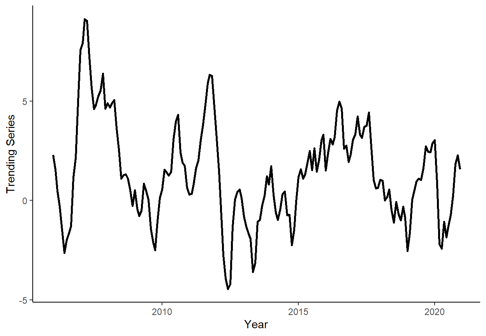

Tutorial 3: Forecasting Methods and Routines
In this tutorial, we will introduce ‘for loop’, and use it to generate time series as well as to obtain one-step-ahead forecasts using a rolling window procedure; we will also perform forecast error diagnostics.
Let’s generate a random walk process, such that \(y_{t} = y_{t-1}+e_{t}\), where \(e_{t} ~ N(0,1)\), and where \(y_{0}=0\), for \(t=1,\ldots,120\).
n <- 120
set.seed(1)
e <- rnorm(n)
y <- rep(NA,n)
y[1] <- e[1]
for(i in 2:n){
y[i] <- y[i-1] + e[i]
}Store \(y\) and \(e\) in a data.table, call it ‘dt’. Add some arbitrary dates to the data (e.g., suppose we deal with the monthly series beginning from January 2011).
dt <- data.table(y,e)
dt$date <- seq(as.Date("2011-01-01"),as.Date("2020-12-01"),by="month")Plot the realized time series using ggplot function.
ggplot(dt,aes(x=date,y=y))+
geom_line(size=1)+
labs(x="Year",y="Random Walk")+
theme_classic()
Generate a sequence of one-step-ahead forecasts from naive and average methods, using the rolling window scheme, where the first rolling window ranges from period 1 to period 80.
dt$average <- NA
dt$naive <- NA
R <- 80
P <- n-R
for(i in 1:P){
w <- y[i:(R-1+i)]
dt$average[R+i] <- mean(w)
dt$naive[R+i] <- w[length(w)]
}Calculate the RMSFE measures for each of the two forecasting methods.
dt[,`:=`(e_average=y-average,e_naive=y-naive)]
rmsfe_average <- sqrt(mean(dt$e_average^2,na.rm=T))
rmsfe_naive <- sqrt(mean(dt$e_naive^2,na.rm=T))
rmsfe_average## [1] 4.672947rmsfe_naive## [1] 0.850081Perform the forecast error diagnostics for the two considered methods.
Zero mean of the forecast errors: \(E(e_{t+1|t})=0\). We perform this test by regressing the forecast error on the constant, and checking whether the coefficient is statistically significantly different from zero.
summary(lm(e_average~1,data=dt))$coefficients## Estimate Std. Error t value Pr(>|t|)
## (Intercept) 4.434858 0.2358002 18.80769 3.682273e-21summary(lm(e_naive~1,data=dt))$coefficients## Estimate Std. Error t value Pr(>|t|)
## (Intercept) 0.1168396 0.13483 0.86657 0.391478No correlation of the forecast errors with the forecasts: \(Cov(e_{t+1|t},y_{t+1|t})=0\). We perform this test by regressing the forecast error on the forecast, and checking whether the slope coefficient is statistically significantly different from zero.
summary(lm(e_average~average,data=dt))$coefficients## Estimate Std. Error t value Pr(>|t|)
## (Intercept) 2.4180785 1.2929708 1.870172 0.06917788
## average 0.2942557 0.1856048 1.585389 0.12116580summary(lm(e_naive~naive,data=dt))$coefficients## Estimate Std. Error t value Pr(>|t|)
## (Intercept) 1.06489905 0.69740557 1.526944 0.1350565
## naive -0.08486143 0.06127484 -1.384931 0.1741512No serial correlation in one-step-ahead forecast errors: \(Cov(e_{t+1|t},y_{t|t-1})=0\). We perform this test by regressing the forecast error on its lag, and checking whether the slope coefficient is statistically significantly different from zero. (Note: first we need to generate lagged forecast errors)
dt[,`:=`(e_average.l1=shift(e_average),e_naive.l1=shift(e_naive))]
summary(lm(e_average~e_average.l1,data=dt))$coefficients## Estimate Std. Error t value Pr(>|t|)
## (Intercept) 0.7898068 0.42027705 1.879253 6.810403e-02
## e_average.l1 0.8275396 0.08966026 9.229726 3.892504e-11summary(lm(e_naive~e_naive.l1,data=dt))$coefficients## Estimate Std. Error t value Pr(>|t|)
## (Intercept) 0.12971406 0.1403668 0.9241081 0.3614178
## e_naive.l1 0.03780853 0.1631333 0.2317647 0.8179979(this is a direct/iterated stuff)
In this tutorial, we will generate a time series, we will obtain multi-step-ahead forecasts using direct and iterated methods from autoregressive models using a rolling window procedure, and we will assess the accuracy of the forecast. We will then turn to interval forecasts, and we will assess their coverage accuracy. To run the code, the data.table, ggplot2, lmtest, and sandwich packages need to be installed and loaded.
Let’s generate a time series that follow an AR(2) process as follows: \[y_t = 0.01t+0.6y_{t-1}+0.2y_{t-2}+\varepsilon_t\] where \(e_{t} \sim N(0,1)\).
n <- 240
set.seed(9)
e <- rnorm(n,0,1)
y <- rep(NA,n)
y[1] <- 0.01+e[1]
y[2] <- 0.02+0.6*y[1]+e[2]
for(i in 3:n){
y[i] <- 0.01*i+0.6*y[i-1]+0.2*y[i-2]+e[i]
}Generate a vector of arbitrary dates (e.g., the monthly series beginning from January 2000), store these along with \(y\) in a data.table, call it ‘dt’, and plot the realized time series using the ggplot function.
date <- seq(as.Date("2000-01-01"),by="month",along.with=y)
dt <- data.table(date,y)
ggplot(dt,aes(x=date,y=y))+
geom_line(size=1)+
labs(x="Year",y="Series")+
theme_classic()
Suppose we believe the series follow either the AR(1) or the AR(2) process, and that we want to compare iterated multi-step forecasts obtained from these models to direct multi-step forecasts. In what follows, we will generate twelve-step-ahead point forecasts from these two methods for the considered two models using the rolling window scheme, where the first rolling window ranges from period 1 to period 180. In obtaining the iterated multi-step forecasts, for each rolling window, we will generate a sequence of one-to-twelve-step-ahead forecasts, but only retain the twelve-step-ahead forecasts.
h <- 12
dt <- dt[,.(date,y,y1=shift(y,1),y2=shift(y,2),y12=shift(y,h),y13=shift(y,h+1))]
dt <- dt[complete.cases(dt)]
dt[,`:=`(a1i=as.numeric(NA),a1d=as.numeric(NA),a2i=as.numeric(NA),a2d=as.numeric(NA))]
R <- 180
P <- nrow(dt)-R-h+1
for(i in 1:P){
### iterated multi-step method
a1i <- lm(y~y1,data=dt[i:(R+i-1)])
a2i <- lm(y~y1+y2,data=dt[i:(R+i-1)])
iter_dt <- data.table(hor=1:h,a1=as.numeric(NA),a2=as.numeric(NA))
## AR(1)
iter_dt$a1[1] <- a1i$coefficients[1]+a1i$coefficients[2]*dt[R+i-1]$y
for(j in 2:h){
iter_dt$a1[j] <- a1i$coefficients[1]+a1i$coefficients[2]*iter_dt$a1[j-1]
}
## AR(2)
iter_dt$a2[1] <- a2i$coefficients[1]+a2i$coefficients[2]*dt[R+i-1]$y+a2i$coefficients[3]*dt[R+i-1]$y1
iter_dt$a2[2] <- a2i$coefficients[1]+a2i$coefficients[2]*iter_dt$a2[1]+a2i$coefficients[3]*dt[R+i-1]$y
for(j in 3:h){
iter_dt$a2[j] <- a2i$coefficients[1]+a2i$coefficients[2]*iter_dt$a2[j-1]+a2i$coefficients[3]*iter_dt$a2[j-2]
}
dt$a1i[R+i+h-1] <- iter_dt$a1[h]
dt$a2i[R+i+h-1] <- iter_dt$a2[h]
### direct multi-step method
a1d <- lm(y~y12,data=dt[i:(R+i-1)])
a2d <- lm(y~y12+y13,data=dt[i:(R+i-1)])
dt$a1d[R+i+h-1] <- a1d$coefficients[1]+a1d$coefficients[2]*dt[R+i-1]$y
dt$a2d[R+i+h-1] <- a2d$coefficients[1]+a2d$coefficients[2]*dt[R+i-1]$y+a2d$coefficients[3]*dt[R+i-1]$y1
}We can now test whether the forecasts of the iterated method ‘statistically significantly’ outperform those of the direct method?
dt$a1i_e <- dt$y-dt$a1i
dt$a2i_e <- dt$y-dt$a2i
dt$a1d_e <- dt$y-dt$a1d
dt$a2d_e <- dt$y-dt$a2d
dt$ld1 <- dt$a1d_e^2-dt$a1i_e^2
dt$ld2 <- dt$a2d_e^2-dt$a2i_e^2
reg_ld1 <- lm(ld1~1,data=dt)
reg_ld2 <- lm(ld2~1,data=dt)
coeftest(reg_ld1,vcov.=vcovHAC(reg_ld1))##
## t test of coefficients:
##
## Estimate Std. Error t value Pr(>|t|)
## (Intercept) -6.9266 1.7170 -4.0342 0.0002828 ***
## ---
## Signif. codes: 0 '***' 0.001 '**' 0.01 '*' 0.05 '.' 0.1 ' ' 1coeftest(reg_ld2,vcov.=vcovHAC(reg_ld2))##
## t test of coefficients:
##
## Estimate Std. Error t value Pr(>|t|)
## (Intercept) -3.1094 1.3271 -2.343 0.02494 *
## ---
## Signif. codes: 0 '***' 0.001 '**' 0.01 '*' 0.05 '.' 0.1 ' ' 1Obtain interval forecasts for horizon 12 using the direct method for an AR(1) model and a linear trend model; plot these interval forecasts along with the observed series.
dt$trend <- c(1:nrow(dt))
dt[,`:=`(a1dl=as.numeric(NA),a1du=as.numeric(NA),trdl=as.numeric(NA),trdu=as.numeric(NA))]
for(i in 1:P){
a1d <- lm(y~y12,data=dt[i:(R+i-1)])
trd <- lm(y~trend,data=dt[i:(R+i-1)])
a1d_pf <- a1d$coefficients[1]+a1d$coefficients[2]*dt[R+i-1]$y
trd_pf <- trd$coefficients[1]+trd$coefficients[2]*dt[R+i-1+h]$trend
a1d_sd <- summary(a1d)$sigma
trd_sd <- summary(trd)$sigma
dt$a1dl[R+i+h-1] <- a1d_pf-1.96*a1d_sd
dt$a1du[R+i+h-1] <- a1d_pf+1.96*a1d_sd
dt$trdl[R+i+h-1] <- trd_pf-1.96*trd_sd
dt$trdu[R+i+h-1] <- trd_pf+1.96*trd_sd
}
ggplot(dt,aes(x=date,y=y))+
geom_line(size=1,color="black")+
geom_line(aes(y=a1dl),size=1,color="steelblue",linetype=5,na.rm=T)+
geom_line(aes(y=a1du),size=1,color="steelblue",linetype=5,na.rm=T)+
geom_line(aes(y=trdl),size=1,color="indianred",linetype=5,na.rm=T)+
geom_line(aes(y=trdu),size=1,color="indianred",linetype=5,na.rm=T)+
theme_classic()
Test the unconditional coverage of the interval forecasts from the considered two models.
dt[,`:=`(i1=ifelse(y>=a1dl & y<=a1du,1,0),it=ifelse(y>=trdl & y<=trdu,1,0))]
# AR(1)
p1 <- mean(dt$i1,na.rm=T)
L10 <- (1-.95)^(P*(1-p1))*(.95)^(P*p1)
L11 <- (1-p1)^(P*(1-p1))*(p1)^(P*p1)
LR1 <- -2*log(L10/L11)
pchisq(LR1,df=1,lower.tail=F)## [1] 0.01027851# AR(2)
p2 <- mean(dt$it,na.rm=T)
L20 <- (1-.95)^(P*(1-p2))*(.95)^(P*p2)
L21 <- (1-p2)^(P*(1-p2))*(p2)^(P*p2)
LR2 <- -2*log(L20/L21)
pchisq(LR2,df=1,lower.tail=F)## [1] 0.1441849Page built: 2022-07-19 using R version 4.1.2 (2021-11-01)